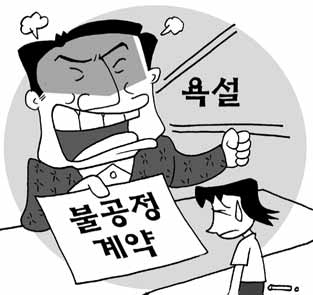
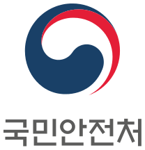

노인 복지정책 개선
11월 7일 부터 개정됩니다.
공지사항
국민신문고 기능개선 작업이 6/20(목) 진행될 예정입니다.
인조 니코틴과세법 개선안
민원제기는 익명을 보장하지 않습니다.
익명을 원하시면 민원이 아닌 '공익신고'를 이용해 주시기 바랍니다.
유사민원검색
+

'갑질'피해 "신고하세요"
공공/민간분야 갑질피해 통합안내

안전 관련 공익신고,
부패신고 아이디어
제안, 안전신고
나의 제안이 이렇게 반영됐어요!
공익신고ㆍ부패신고ㆍ안전신문고ㆍ아이디어제안
안전창구 하나로
안전365 (공익신고)
국민의 안전을 위협하는 공익 침해
행위가 발생하였거나 발생할 우려가
있는 경우 신고해 주세요.
「공익신고자보호법」에 따라
신고자의 비밀이 보호됩니다.
행사


30102 세종특별자치시 도움5로 20 정부세종청사 국민권익위원회
정부민원안내 콜센터 (국번없이) 110 / 시스템관련 이용안내 : 1600-8172(대표번호) / 070-4266-7797(일반전화) 상담안내09:00~18:00(평일)
COPYRIGHT 2015. 국민권익위원회 All Rights Reserved.